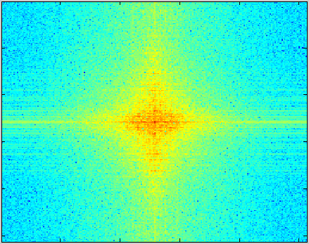
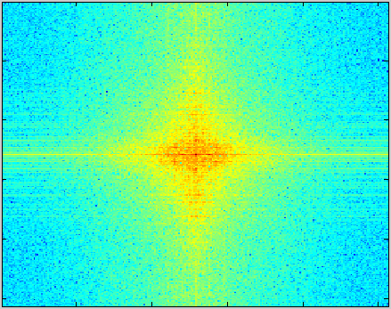

The following content gives an overview of the digital/analog signal processing courses that I followed at my school. This is not meant to be a comprhensive description but rather a brief guide.
1. Convolution
In linear filtering, convolution plays a fundamental role. Indeed, if we write a signal \(x(t)\) such that \(x(t) = \int^{+\infty}_{-\infty} x(\tau)\delta(t-\tau) d\tau \), with \( \delta(t) \) the Dirac impulse. Then when applying the filter function on the signal, we have : \[ f(x) = \int^{+\infty}_{-\infty} f(x(\tau)\delta(t-\tau)) d\tau \] \[ f(x) = \int^{+\infty}_{-\infty} x(\tau)f(\delta(t-\tau)) d\tau,\ (linearity\ property) \] \[ y(t) = \int^{+\infty}_{-\infty} x(\tau) h((t-\tau)) d\tau, (time-independent\ property) \] \( h(t) \) represents the output function when we input the Dirac impulse into the filter and \( y(t) \) is the signal \( x(t) \) filtered. We end up on the convolution operation between the input signal and the Dirac impulse output function.
2. Physical limitations and signal reconstitution
To simplify calculations, physicians invented this mathematical object called Dirac impulse. Unfortunately, in the real world we cannot recreate this impulse. Indeed, transistors have a toggle limitation due to the speed of current, causing a Dirac impulse to look like more of a brief door function. But what does this actually involve for a signal? Because to sample a continuous signal, we need to use this theorical object. Does this inaccuracy cause the signal to transform?
3. Discrete Fourier Transform (DFT) and Analog Filter Synthesis
This course gives an understanding on how we numerize a signal, what are the impacts and how we can elaborate a digital filter to filter an analog signal.
With a view to processing digital signals, we need to turn a continuous (or analog) signal into a discrete signal that consists of a finite number of samples that can be handled by a processor. Therefore, we use the DFT, let's remind us quickly of that.
- Sampling & Quantification: turns the continuous signal into a discrete signal.
- Temporal truncation of the signal: get an finite amount of samplings.
- Spectral discretization: turns the continuous spectrum into a discrete spectrum.
- Zero-Padding (optional): increase the spectrum's resolution.
However, each one of these steps has an impact on the signal. Indeed, discretizing a signal is not without consequences and some parameters should be chosen wisely to avoid aliasing and other artifacts.
4. Digital Filter Synthesis
There exists 2 types of digital filters: IIR (Infinite Impulse Response) and FIR (Finite Impulse Response).
The purpose of this method is to determine the equivalent digital form \( H(z) \) (\(z\)-domain) of the analog template filter \( H(p) \). From there, we can deduce the recursive algorithm \( s[n] \) that will implement the digital filter. This method is more accurate and will be generally preferred over the RIF method. However, the analog reference filter must meet some stability criteria (poles on the left half part of the complex plane).
- Invariance of the Impulse Response: This method consists of starting with a digital filter template and then switch to an analog template by considering that \( \omega_n = \omega_a \). Then we figure out the analog filter's transfer function (analog poles \(p)\) and we match back this analog filter with the correspondong digital filter.
- Bilinear transform: This method consists of the same approach as the previous one expects we consider that digital pulsations are transformed to analog pulsations by the following relation: \( \omega_a = \frac{2}{T_e} tan(\frac{\omega_n T_e}{2}) \). This relation comes from this approximation: \( p \equiv \frac{2}{T_e}\frac{(1-z^{-1})}{(1+z^{-1})} \).
All in all, this method has some benefits - more selective, faster and requires fewer memory registers - and some drawbacks - can be unstable (poles), non-linear phase.
The purpose of this method is to determine an approximation of the filter's impulse response and then convolute it with the input signal. As we consider only an approximation, the filter's characteristics get modified and we have to deal with some drawbacks such as the apparition of wavelets in the filter's spectrum (caused by the truncation --> convolution with sinc).
- Coherence of the Impulse Response:
- Sampling frequency: Determine \( f_{max}\) and apply the Shannon theorem: \(f_e\ \geq\ 2f_{max}\)
- Impulse response (IR): Find the impulse response of the analog filter.
- Signal truncation: Truncate the IR after a rank N such that \( h(N) \geq \frac{h_{max}}{100}\)
- Discretization of the inverse DFT: We determine the IR samples using direclty the inverse DFT definition > \( h[n] = \frac{1}{N} \sum_{k=-\frac{N}{2}}^{\frac{N}{2}-1} X(k\delta f) e^{j2\pi \frac{n}{N}k} \).
All in all, this method has some benefits - always stable (no poles), linear phase (if symmetric) - and some drawbacks - less selective, less efficient and requires more memory space.
5. Signal modulation
When it comes to transmitting information using signals, we face some issues:
- most of the time the signal transmitted is comprised within a range of 20 to 20kHz (voice frequency), thus if we transmit the signal at its original frequency, we would end up having all signals interfering with each other (all the same frequency)
- the size of the receiver should also be ridiculously large for detecting such signals (several kilometers)
Modulation allows to slide the signal spectrum along the frequency axis to a higher frequency, thereby countering the two previous problems. Indeed, we can control the frequency at which we want our signal to be broadcasted, thereby reducing significantly the size of the receiver and also avoiding signal overlapping.
In the following schema, \(x(t)\) is the signal to be transmitted (carrier signal), \(s(t)\) is the signal modulated and emitted, \(m(t)\) is the modulation signal, \(d(t)\) is the demodulation signal and \(y(t)\) is ideally the same as \(x(t)\).

6. Intercorrelation
The correlation method is in the field of radar. When emitting a signal, we want to be able to detect if the signal comes back to us (obstacle detection for instance). Thus, the detector needs to constantly compare any received signal to with the one that was originally emitted.
- most of the time the signal transmitted is comprised within a range of 20 to 20kHz (voice frequency), thus if we transmit the signal at its original frequency, we would end up having all signals interfering with each other (all the same frequency)
- the size of the receiver should also be ridiculously large for detecting such signals (several kilometers)
Modulation allows to slide the signal spectrum along the frequency axis to a higher frequency, thereby countering the two previous problems because now we can control the frequency at which we want our signal to be broadcasted and as the frequency gets higher, the receiver gets smaller.
 
